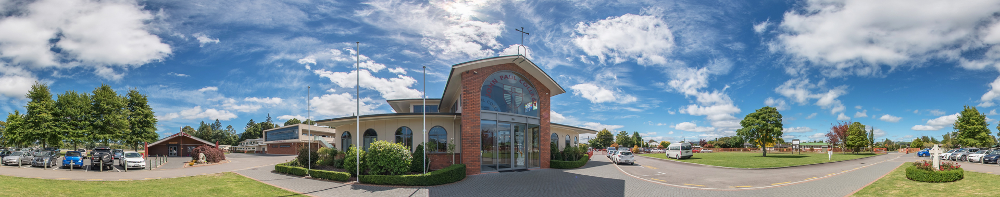
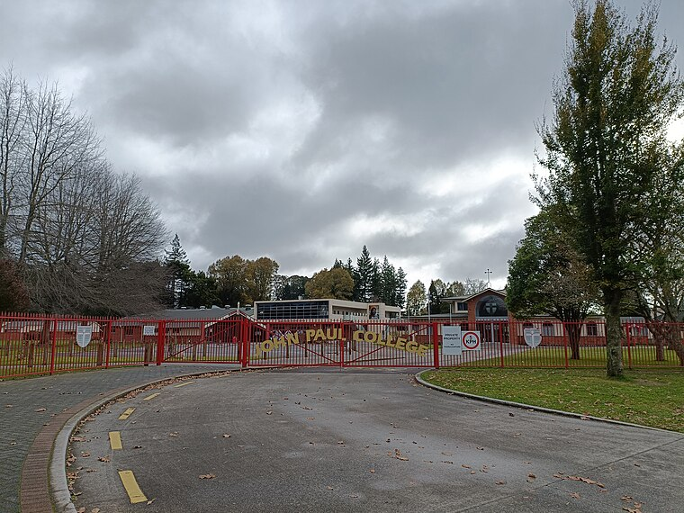

Our Campuses
Main Campus – Senior and Junior School
John Paul College’s main campus is located on Whitworth Road and serves as the central hub for both junior and senior students (Years 7–13). It includes a wide range of facilities such as modern classrooms, science labs, technology and arts blocks, sports fields, and a chapel. This is where most academic classes, extracurricular activities, and school events take place.
McKillop Campus – Offsite Learning and Support
JPC also operates the McKillop Campus, a smaller site used for specialized programs, retreats, and pastoral support. It provides a quieter environment ideal for focused learning, small-group sessions, and school wellbeing initiatives. The McKillop Campus supports the school's commitment to holistic education, personal growth, and spiritual development.
John Paul College offers a wide range of facilities across its campus to support both academic learning and extracurricular life. The Gymnasium is a central space for PE classes, sports practices, assemblies, and school events. The School Field and Astro Turf Courts are used for outdoor sports such as rugby, football, netball, and athletics. The Library provides a quiet area for reading, study, and research. Science Labs, Art Rooms, Technology Workshops, and Computer Suites support hands-on learning in specialist subjects. The Music and Drama Rooms are fully equipped for performing arts. Students also attend liturgies and masses in the College Chapel. For breaks and socialising, there are seated areas around the Tuck Shop, Courtyard, and various common spaces across the school.

